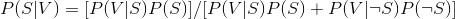
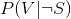
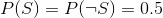
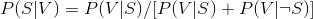
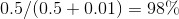

13.1 一个简易的垃圾邮件过滤器
想象有一个“全集”，其中存放了从所有可能的邮件中随机选择的邮件。我们令 S 表示事件“这是一封垃圾邮件”，令 V 表示事件“该邮件含有单词 viagra”。在已知邮件中含有单词 viagra 的情况下，该邮件是垃圾邮件的概率可以通过贝叶斯定理求出：

上式中，分子表示某邮件为垃圾邮件并且 其中包含单词 viagra 的概率，而分母表示邮件中出现单词 viagra 的概率。因此，你可以认为，上面的公式实际上是在计算兜售伟哥的垃圾邮件所占的比例。
如果我们已经收集了大量垃圾邮件和非垃圾邮件，那么就可以轻松计算 P (V | S ) 和  。如果我们进一步假定任何邮件是垃圾邮件或非垃圾邮件的可能性是等同的（即  ），那么：

举例来说，如果 50% 的垃圾邮件都含有单词 viagra，而只有 1% 的非垃圾邮件含有该单词，那么任何一封含有单词 viagra 的电子邮件为垃圾邮件的概率是：
